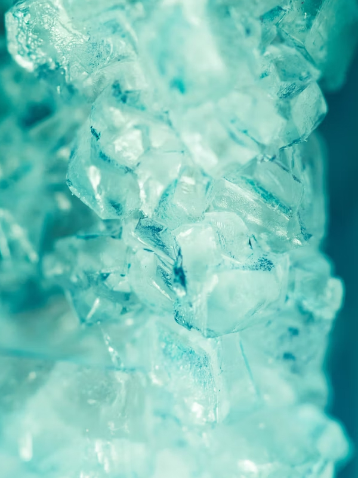
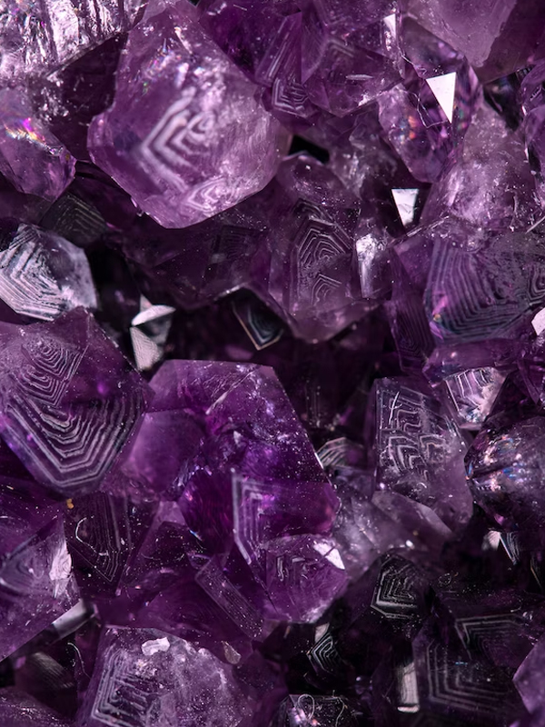
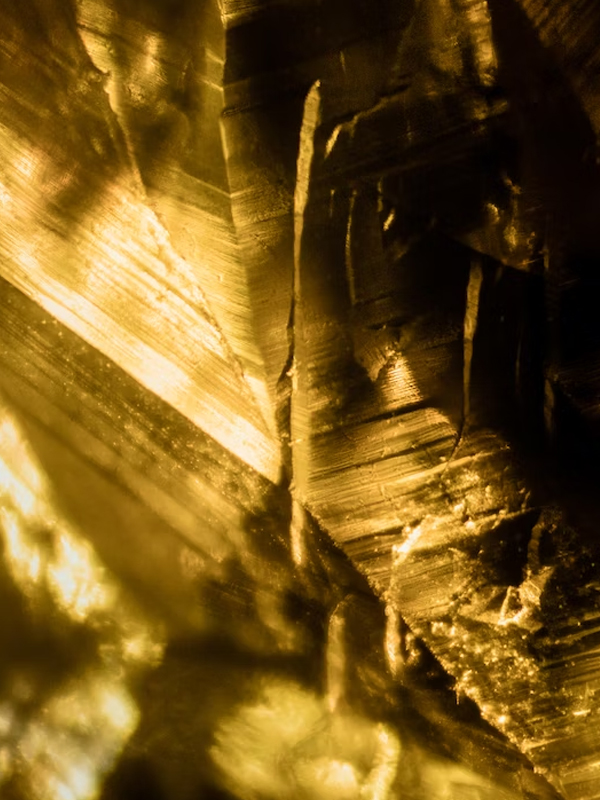
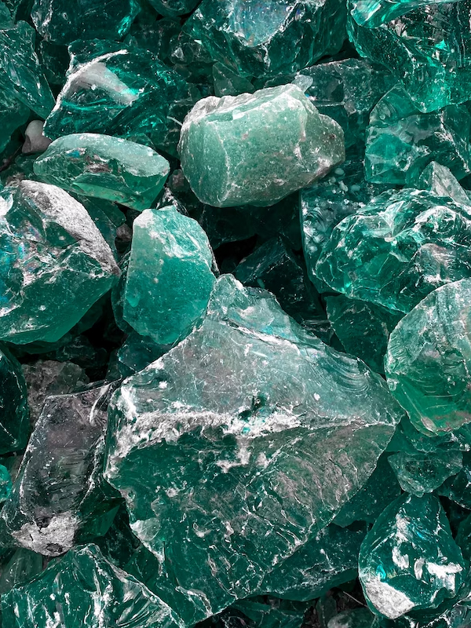
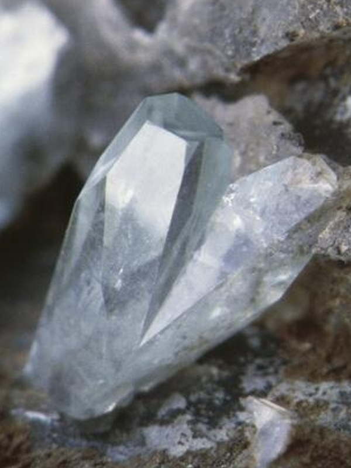
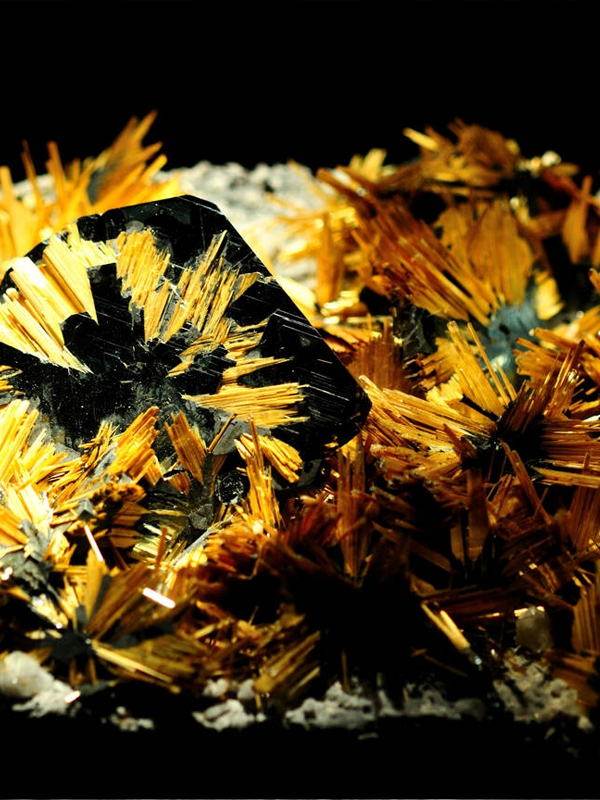

Gemas Fantásticas
- 
- 
- 
- 
- 
- 
Quartzo
O quartzo ou quarço é o segundo mineral mais abundante da Terra, perdendo apenas para o grupo de feldspatos. Possui estrutura cristalina trigonal composta por tetraedros de sílica, onde cada oxigênio fica dividido entre dois tetraedros.
Sua cor é transparente, com variedades de cores conforme os elementos presentes na fórmula química
O quartzo é o principal mineral do grupo de SiO2 dos tectossilicatos. Além de ser formado só por tetraedros de sílica altamente polimerizados, sua estrutura química simples o relaciona à grande variedade de polimorfos de sílica (cristobalita e tridimita, membros do grupo e diferenciados só pelo arranjo tridimensional dos tetraedros de sílica).
Existem dois tipos de variedades de quartzo: as variedades cristalinas de granulação grossa e as variedades criptocristalinas. As últimas divididas entre variedades criptocristalinas e variedades granulares.
fortes piroeletricidade e piezoeletricidade, propriedades que são extensamente aproveitadas na industria.
Ametista
O quartzo ou quarço é o segundo mineral mais abundante da Terra, perdendo apenas para o grupo de feldspatos. Possui estrutura cristalina trigonal composta por tetraedros de sílica, onde cada oxigênio fica dividido entre dois tetraedros.
Sua cor é transparente, com variedades de cores conforme os elementos presentes na fórmula química
Citrino
O quartzo ou quarço é o segundo mineral mais abundante da Terra, perdendo apenas para o grupo de feldspatos. Possui estrutura cristalina trigonal composta por tetraedros de sílica, onde cada oxigênio fica dividido entre dois tetraedros.
Sua cor é transparente, com variedades de cores conforme os elementos presentes na fórmula química
Esmeralda
O quartzo ou quarço é o segundo mineral mais abundante da Terra, perdendo apenas para o grupo de feldspatos. Possui estrutura cristalina trigonal composta por tetraedros de sílica, onde cada oxigênio fica dividido entre dois tetraedros.
Sua cor é transparente, com variedades de cores conforme os elementos presentes na fórmula química
Phosphophyllite
O quartzo ou quarço é o segundo mineral mais abundante da Terra, perdendo apenas para o grupo de feldspatos. Possui estrutura cristalina trigonal composta por tetraedros de sílica, onde cada oxigênio fica dividido entre dois tetraedros.
Sua cor é transparente, com variedades de cores conforme os elementos presentes na fórmula química
Rutilo
O quartzo ou quarço é o segundo mineral mais abundante da Terra, perdendo apenas para o grupo de feldspatos. Possui estrutura cristalina trigonal composta por tetraedros de sílica, onde cada oxigênio fica dividido entre dois tetraedros.
Sua cor é transparente, com variedades de cores conforme os elementos presentes na fórmula química
FAQ
- Quais são as propriedades mágicas?
- Misca Musca Mickey Mouse
- Qual é o cristal mais abundante no mundo?
- Quartzo.
- Qual resiste a maior temperatura?
- Pewpew pew pew
- Posso comer cristais?
- Misca Musca Mickey Mouse
Contato

- schritke@hotmail.com
- +55 (47)93300-3396
- Rua da Paz, nº 460
- Curitiba - PR